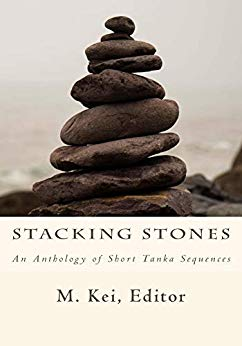

M. Kei (Editor), Stacking Stones, An Anthology of Short Tanka Sequences, A Review by Tony Beyer
M. Kei (Editor), Stacking Stones, An Anthology of Short Tanka Sequences, Keibooks, Perryville, MD, USA, , $16.00 paperback / $5.00 Kindle, 204 pages, ISBN-13: 978-1722375454.
Since I first read Shiki’s wisteria sequence, in Janine Beichman’s translation, then Burton Watson’s, I have admired the tanka sequence as the most congenial Japanese poetry genre from the point of view of a Western-aligned practitioner. Elsewhere, I have spoken about the five-line tanka as the equivalent of the frame in cinema, and how the content and imagery permutated through this fixed structure is like the process of film. There is also a parallel with the logical and grammatical development of traditional European stanza forms. But tanka more particularly offer us the opportunity to explore more subtle Japanese methods of linkage, through colour, flavour, shape, resonance, juxtaposition or harmony, for example.
With its title and his eloquent introduction to this anthology, Kei tells us the same things. His metaphor of stacking stones is another useful analogy regarding the way in which a tanka sequence is made or assembled. The individual parts remain themselves but are simultaneously assembled into other relationships and texts. It is this idea that makes tanka sequences so fascinating, whether produced by a single poet or by two or more authors responding to one another’s poems. Both approaches are well represented in Stacking Stones, along with the third category, tanka prose. What’s exciting, though, about the collection is its diversity and consistently high standard. Kei has proven himself an exacting but equally generous editor.
The ten thematic sections of the book begin with ‘Much Like a Polaroid’, suggesting Shiki’s concept of the shasei, or sketch from life. The poems in this section are, however, more inventive and sometimes playful. Early on, Roger Jones opens his ‘Work Desk’ sequence with:
no difference now
than when I was twenty –
put on the coffee,
sit by a quiet window
and write things down
This is an excellent summary of tanka practice. The poetry arises from the author’s solitude but is very much in and of the world through the window. A further, more amusing instance occurs in ‘Found Tanka and Sedoku Film Reviews in Rottentomatoes.com’, curated by Bruce England:
your heart isn’t
likely to soar during
this poetic drama
but it might ache
with recognition
The observable world includes not only human society and behaviour but products of the human imagination as well.
The most challenging section is the third, ‘Red Lace’. Here the poems are at their most physical, even visceral, in their questioning of human relationships. The appearance of Geoffrey Winch’s ‘What If’ and ‘three unwise tanka’ by ai li on facing pages raises disturbing thoughts about male and female viewpoints and responsibilities. In some ways, Geoffrey Winch is the more unwise. Bitter perceptions of age and infirmity are vividly expressed by Billy Simms in ‘Sequence #4’, written alternately with Martin McKellar:
startled
by the old man
in the bathroom with me
is that really
my reflection?
The subject matter of ensuing sections develops these concerns and engages with history, place, conflict and the numinous. Outstanding pieces of tanka prose contribute their titles respectively to the last two parts of the anthology: ‘Sacred Sites’ by Patricia Prime and Giselle Maya, and A. A. Marcoff’s ‘wild swans: a dream poem’. There are many fine works included by writers of the stature of Amelia Fielden, Joy McCall, M. Kei himself and others. Even Shakespeare has a look-in with Vijay Joshi’s ‘The Bard Coined It’.
I have quoted sparingly because, obviously, brief selection misrepresents the intention and effect of the tanka sequence and this exhibition of examples in English. The sequences need to be read in their entirety – even in tandem with each other – to achieve their full impact and justify the valid focus Kei places upon continuity and originality. He writes well about the role of the unexpected. Single poems, sequences and sections are the stacked stones, durable but flexible in their capacity for combination and recombination. The result of these collected voices is very like human conversation at its best: wise but vulnerable minds sharing experience and speculation about existence. The metaphor of strength and adaptability holds true.
In her book, Masaoka Shiki, Janine Beichman calls the chapter on tanka ‘The Consecration of the Everyday’. If this phrase may be taken as a definition of what we mean by tanka from its revision in Japan in the late 19th/early 20th centuries to its adaptation as an organic form by writers in English, Stacking Stones supplies ample evidence of such an aim in practice. Poetry that is honest about human existence, memorable in expression and emotionally intelligent, can only be a positive component of the reality we now inhabit.
|